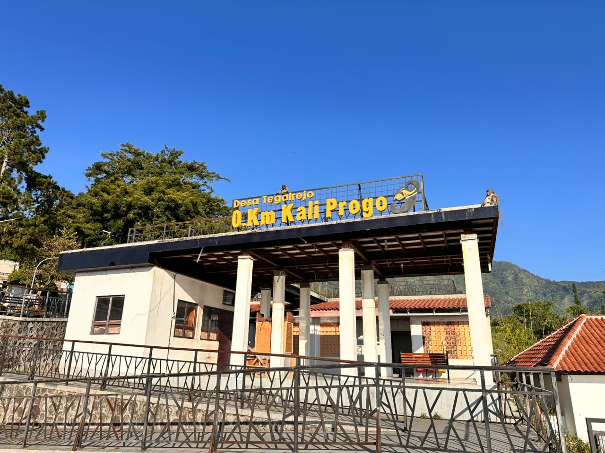

Destinasi Unggulan
3 Wisata Andalan Desa Tegalrejo
Mata air suci, titik awal sungai terpanjang di Jawa Tengah, dan hutan pinus — tiga wajah Tegalrejo dalam satu perjalanan.
Situs Alam

Titik 0 KM Kali Progo
Titik awal mula aliran Kali Progo yang membentang hingga bermuara di Samudra Hindia, Yogyakarta.
Lihat detail
Mata Air

Umbul Jumprit
Tempat ini terkenal sebagai hulu Sungai Progo, destinasi wisata alam, situs ziarah sejarah, serta tempat pengambilan air suci untuk perayaan Waisak
Lihat detail
Wisata Alam

Wapitt
Wisata Alam Jumprit Temanggung — area hutan pinus dengan spot foto, camping ground, dan udara sejuk.
Lihat detail